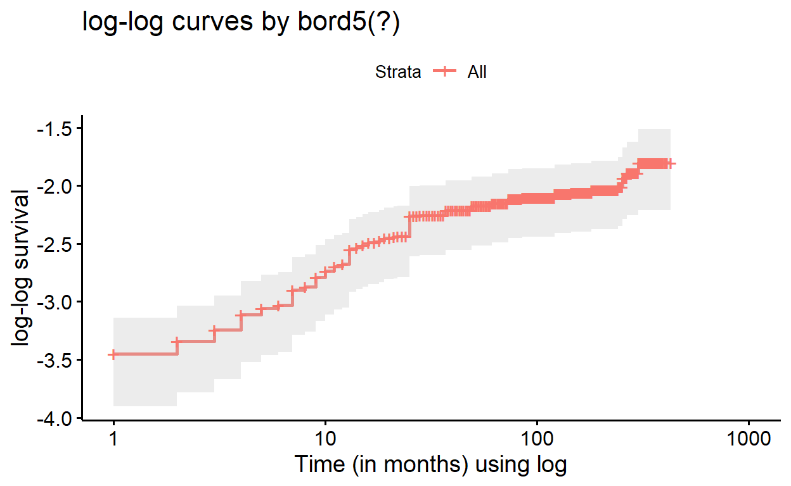
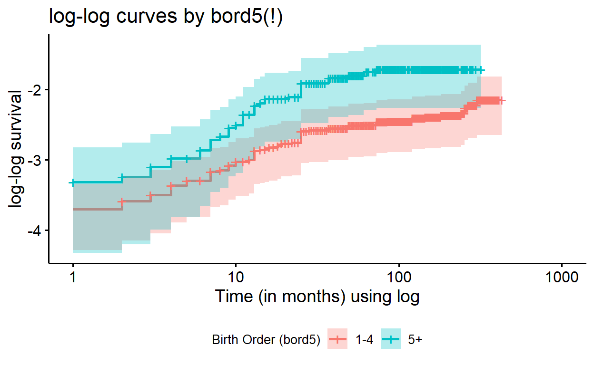

LAB MATERIALS
Lab 02 Goals
- Describe survival time data utilizing summary statistics and graphical methods
- Fit Cox proportional hazards regression models with fixed and time-varying covariates
- Assess appropriateness of the assumptions of the Cox model
- Calculate incidence rates and ratios using Poisson methods
Lab 02 Grading scheme
| Competency | Points |
|---|---|
| .Rmd file runs without error | 10 |
| Table 1 | 5 |
| Table 2 | 12 |
| Table 3 | 8 |
| Figures 1 - 10 | 30 (3 points each) |
| Short answer questions | 20 (5 points each) |
| Total | 85 |
Data and assignment
The assignment and dataset are both available on Sakai
NOTE ON THE DATASET: As you load the data into R, be sure to notice that this is the original, DHS dataset, with 22,534 observations (i.e.from before we closed the cohort).
Packages
- {tidyverse}
- {survival}
- {survminer}
- {epiR}
- {fmsb}
- {biostat3}
Survival Analysis
The methods we have used so far have assumed a closed cohortno loss to follow-up or censoring. In the event that we have loss to follow up (or even if we dont), we can analyze the time-to-death using methods from survival analysis. The most common approach for this is to utilize the Cox proportional hazards regression model. We will first focus on how to describe time-to-event data, then we will turn to how to analyze and check assumptions for the Cox proportional hazards model.
Describing survival data
Survival analysis in R is similar to other types of analysis with the exception that you have to first tell R that you are working with time-to-event data. Before we begin to analyze survival data and generate Kaplan-Meier curves, we need to create a Surv() data object.
This is a special data type, unique to the {survival} package. It simultaneously indicates an observations time at risk, and whether or not it was censored.
The Surv() function takes two objects from our data frame: the subjects follow-up time and whether or not they experienced the event.
In the present analysis, that information is stored in our variables time (how many months the child has survived after birth) and death, respectively. We can create this object as a new variable in our data frame using mutate():
kenya <- kenya %>%
mutate(surv_data = Surv(time = time, event = death))
Be sure to inspect that new Surv() column. Heres how it appears next to our variables for time and death:
| time | death | surv_data |
|---|---|---|
| 177 | 0 | 177+ |
| 170 | 0 | 170+ |
| 141 | 0 | 141+ |
| 247 | 0 | 247+ |
| 242 | 0 | 242+ |
| 319 | 0 | 319+ |
| 165 | 0 | 165+ |
| 162 | 0 | 162+ |
| 21 | 0 | 21+ |
| 80 | 0 | 80+ |
| 13 | 1 | 13 |
| 145 | 0 | 145+ |
We can then use our Surv() object to build a survfit() time-to-event model, which is parameterized just like in the function lm().
surv_bord5 <- survfit(surv_data ~ bord5, data = kenya)
If we inspect this model, well see that it is the tabular representation of a survival curve. Use summary() to inspect it for yourself:
summary(surv_bord5)
The summary of surv_bord5 will show us a tabulation of the cohorts survival probability at each time-step, along with how many were at risk and the number of events in that interval.
Describing Survival Data
Survival data can be described both graphically and analytically. Measures such as total time at risk, number of subjects and median survival time are common values reported in survival analysis reports.
If we print() the surv_fit() object generated above, we receive a brief set of summary statistics that would suffice for a good portion of Table 1. But median values are NA. And theres no mean. Oh no!
Call: survfit(formula = surv_data ~ bord5, data = kenya)
n events median 0.95LCL 0.95UCL
bord5=0 17400 1609 NA NA NA
bord5=1 5134 596 NA NA NAIn view of this, to fill out Table 1, we will need to rely on the summarize() function to get summary data for the variables time and death
Kaplan-Meier Curves
Graphically, Kaplan-Meier curves are plots of the probability of survival as a function of time. These are often presented for each level of the primary exposure variable and are usually unadjusted (although adjusted KM curves are possible).
The package {survminer} contains plotting functions that interact with survfit() objects to plot survival curves. The syntax is a bit different than {ggplot2}, but the concept is the same.
ggsurvplot(fit = surv_bord5, data = kenya,
ylim = c(.8, 1),
conf.int = TRUE,
xlab = "Time since birth (months)",
ylab = "Probability of Survival",
title = "FIGURE 1: Survival Probability by birth order",
legend = "bottom", # this specifies legend position
legend.title = "Birth Order (bord5)",
legend.labs = c("1-4", "5+")
)

Cox Proportional Hazards Models
In R, Cox PH models are parameterized just like the survfit() function, in that they take a Surv() object as the response variable. However, theyre different in their output. The output is similar to the familiar regression output, with coefficients.
cox_bord5 <- coxph(Surv(time, death) ~ bord5, data = kenya)
summary(cox_bord5)
Call:
coxph(formula = Surv(time, death) ~ bord5, data = kenya)
n= 22534, number of events= 2205
coef exp(coef) se(coef) z Pr(>|z|)
bord5 0.30230 1.35297 0.04812 6.283 3.33e-10 ***
---
Signif. codes: 0 '***' 0.001 '**' 0.01 '*' 0.05 '.' 0.1 ' ' 1
exp(coef) exp(-coef) lower .95 upper .95
bord5 1.353 0.7391 1.231 1.487
Concordance= 0.529 (se = 0.005 )
Likelihood ratio test= 37.63 on 1 df, p=9e-10
Wald test = 39.47 on 1 df, p=3e-10
Score (logrank) test = 39.77 on 1 df, p=3e-10Adjusted models
To estimate the effect of bord5, adjusting for maternal education (coded with disjoint indicator variables), we would use the following code:
cox_bord5_ed <- coxph(Surv(time, death) ~ bord5 +
education_c2 + education_c3,
data = kenya)
Alternatively, we can parameterize education as a factor-type variable to obtain the same result:
cox_bord5_ed <- coxph(Surv(time, death) ~ bord5 + factor(education),
data = kenya)
Violation of the Proportional Hazards Assumption
The standard Cox proportional hazards model assumes that the effect of a covariate on the time to an event (e.g.bord5) remains the same across follow-up (i.e., is proportional or constant over time). This might not be a reasonable assumption. We can evaluate if our data are consistent with this assumption through graphical or test-based methods.
A common graphical method is to plot a transformation of survival for categories of a variable (S(t), the probability of not having the event) against the natural logarithm of follow-up time. In particular, the ln(-ln(S(t)) for two categories of a given variable should remain fairly parallel in a loose sense (never cross, although the lines may not be perfectly straight).
If two lines cross, or appear to be converging (or diverging) even outside of the range of time used, then this can indicate that the proportional hazards assumption may not be reasonable and you should explore estimating an effect that varies over time.
These plots are only useful for categorical variables and cannot be utilized for continuous variables.
In R, we generate this type of plot similar to Kaplan Meier plots. But since were using data from our coxph() model objects, we first need to convert that model object to a survival object (using survfit()) that can be recognized by ggsurvplot():
We can then generate a log-log plot with similar code for ggsurvplot(), except we need to set our function. Its default gives the survival probability, but here we will set fun = "cloglog".
ggsurvplot(surv_bord5, fun = "cloglog",
conf.int = TRUE,
xlab = "Time (in months) using log",
ylab = "log-log survival",
title = "FIGURE 6: log-log curves by bord5",
legend = "bottom", # this specifies legend position
legend.title = "Birth Order (bord5)",
legend.labs = c("1-4", "5+"))

Plotting adjusted models
You might notice that if we tried to plot the adjusted model from above, the plot appears unstratified:
surv_bord5_ed <- survfit(cox_bord5_ed, data = kenya)
ggsurvplot(surv_bord5_ed, fun = "cloglog",
conf.int = TRUE,
xlab = "Time (in months) using log",
ylab = "log-log survival",
title = "FIGURE 6: log-log curves by bord5")

The strata() function allows us to indicate which variable we wish to evaluate for the proportional hazards assumptions. This function is used within our model equation.
So to get a proper stratified cloglog plot from our adjusted Cox model, we must re-build the model and specify which variable to stratify with strata(), then convert to survfit(), and only then will it plot properly:
cox_bord5_ed_strata <- coxph(Surv(time, death) ~ strata(bord5) +
education_c2 + education_c3 + male + mage + mage2,
data = kenya)
surv_bord5_ed_strata <- survfit(cox_bord5_ed_strata, data = kenya)
ggsurvplot(surv_bord5_ed_strata, fun = "cloglog",
conf.int = TRUE,
xlab = "Time (in months) using log",
ylab = "log-log survival",
title = "FIGURE 6: log-log curves by bord5",
legend = "bottom", # this specifies legend position
legend.title = "Birth Order (bord5)",
legend.labs = c("1-4", "5+"))

If we compared these adjusted log-log survival curves with those of the plain model, where bord5 is the only predictor (formula = Surv(time, death) ~ bord5), we would find that the plots are quite alike, but contain subtle differences in the alignment of the curves.
Formal statistical test of proportional hazards
A formal statistical test of proportional hazards can be conducted by allowing the hazard ratio to vary across time, and testing if this time-varying effect is significant. To perform this, we use the tt() function in our model formula, and then use the argument tt = to specify the function by which time is interacting with bord5 in our model:
cox_tt <- coxph(Surv(time, death) ~ bord5 + male + rural + education_c2 + education_c3 + mage + mage2 + tt(bord5),
data = kenya,
tt = function(bord5, time,...)bord5*log(time))
Estimating Time-varying effects
In the event that you find the proportional hazards assumption violated for a particular covariate, you should report the effect of the exposure at several time points (you can think of this as effect modification of the exposure by follow-up time). The specification of a Cox model with a time-varying effect for the covariate \(X_1\) is:
\[ ln[h(t)] = ln[h_0(t) + \beta_1X_1 + \beta_2X_1*t] \] Notice that this is in a form similar to our original Cox regression formula, but contains an interaction term between our main effect and \(t\), time.
To estimate the hazard ratio for \(X_1 = 1\) vs.\(X_1 = 0\) at time \(t = T\):
\[ \begin{eqnarray} ln(HR) &=& ln \left[ \frac{h(t|X=1, t=T)}{h(t|X=0, t = T)}\right] = \frac{ln[h(t|X=1, t=T)]}{ln[h(t|X=0, t = T)]}\\ \\ &=&[ln(h_0(T)) + \beta_1(1) + \beta_2(1)*T] - [ln(h_0(t)) + \beta_1(0) + \beta_2(0)*T]\\ &=& \beta_1(1) + \beta_2(1) * T\\ \\ HR &=& exp(\beta_1 + \beta_2*T) \\ 95\%\ CI &=& exp[\beta_1 + \beta_2*T \pm (1.96 * SE(\beta_1 + \beta_2*T))] \end{eqnarray} \]
You can use the Cox regression model that contains the time-varying effect lincom() command to generate time-varying effects
Calculating incidence rates and related measures of association
Just as the generalized linear model can be used to estimate risks, risk differences and risk ratios, we can also use this methodology to estimate incidence rates and incidence rate ratios from the counts of outcomes over time. The Poisson distribution is used to model counts or rates and has the general form:
\[ ln(deaths) = \beta_0 + \beta_1X_1... + \beta_kX_k + ln(time) \] where family = poisson and link = log.
Notice that the specification of the Poisson model includes the number of deaths and the logarithm of the exposure time. Rearranging the above equation and a bit of algebra shows how this can be used to derive the incidence rate (IR):
\[ \begin{eqnarray} ln(deaths) - ln(time) &=& \beta_0 + \beta_1X_1... + \beta_kX_k\\ ln\left(\frac{deaths}{time}\right) &=& \beta_0 + \beta_1X_1...+\beta_kX_k\\ ln(IR) &=& \beta_0 + \beta_1X_1...+\beta_kX_k \end{eqnarray} \]
To estimate incidence rates for \(X_1 = 0,1\):
\[ \begin{eqnarray} ln[IR | X_1] &=& \beta_0 + \beta_1X_1\\ \\ \textbf{when\ X_1 = 0:} \\ ln(IR_0) &=& \beta_0 + \beta_1(0)\\ IR_0 &=& exp(\beta_0)\\ \\ \textbf{when\ X_1 = 1:} \\ ln(IR_1) &=& \beta_0 + \beta_1(1)\\ IR_1 &=& exp(\beta_1 + \beta_1) \end{eqnarray} \]
To estimate the incidence rate ratio (IRR) for \(X_1 = 1\) vs.\(X_1 = 0\):
\[ \begin{eqnarray} ln(IRR) = ln\left(\frac{IR_1}{IR_0}\right) &=& ln(IR_1) - ln(IR_0)\\ &=&[\beta_0 + \beta_1(1)] - [\beta_0 + \beta_1(0)] \\ &=& \beta_1 \\ \\ IRR &=& exp(\beta_1)\\ 95\%\ CI &=& exp[\beta_1 \pm (1.96 * SE(\beta_1))] \end{eqnarray} \]
IRs and IRRs can be estimated through linear combinations of the regression parameters as we have done with previous linear models, using lincom().
R commands for the tabular analysis of rates
You can use the pyears() function from the {survival} package to generate values that are useful in calculating incidence rates and incidence rate ratios
ptime_bord5 <- pyears(Surv(time, death) ~ strata(bord5),
data = kenya, scale = 1)
summary(ptime_bord5)
Call: pyears(formula = Surv(time, death) ~ strata(bord5), data = kenya,
scale = 1)
number of observations = 22534
strata(bord5) N Events Time
--------------- ------- -------- ---------
bord5=0 17400 1609 2214691
bord5=1 5134 596 474381 You can then access values within the pyears() object like this:
# events of death in strata bord5 = 0
ptime_bord5$event[1]
bord5=0
1609 # person time in strata bord5 = 0
ptime_bord5$pyears[1]
bord5=0
2214691 # events of death in strata bord5 = 1
ptime_bord5$event[2]
bord5=1
596 # person time in strata bord5 = 1
ptime_bord5$pyears[2]
bord5=1
474381 R Commands for Poisson Regression Models
The command for a Poisson regression model has the following form:
Access the model summary just like any normal glm() model:
summary(poisson_bord5)
Note that the exposure time is explicitly specified in the GLM options using offset(). We must use the natural log of time to generate the appropriate estimates since our model is fit on the log scale (link = "log").
To generate estimates of Incidence Rates (IR) and Incidence Rate Ratios (IRR), you can use the lincom() command with your poisson models.
# IR at intercept
lincom(poisson_bord5, "(Intercept)", eform = TRUE)
# IR at bord5 == "5+"
lincom(poisson_bord5, "(Intercept) + bord5", eform = TRUE)
# IRR and CI
lincom(poisson_bord5, "bord5", eform = TRUE)
To have IR/IRR reported (instead of beta coefficients), be sure to set eform = TRUE in your lincom() function.